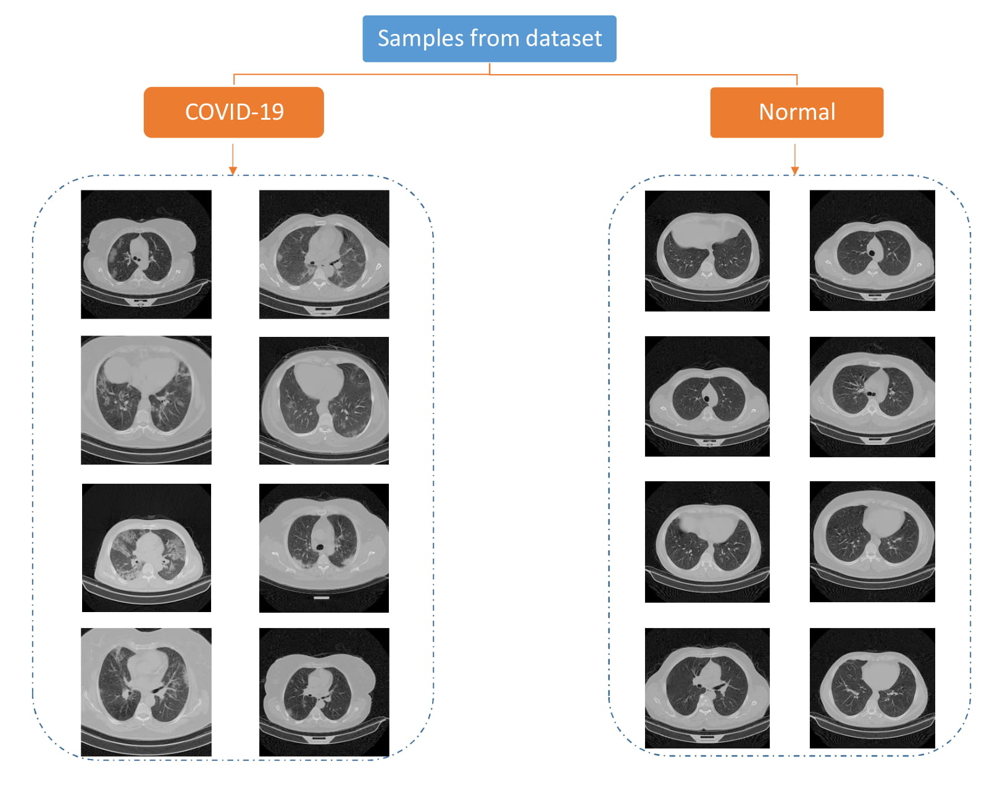
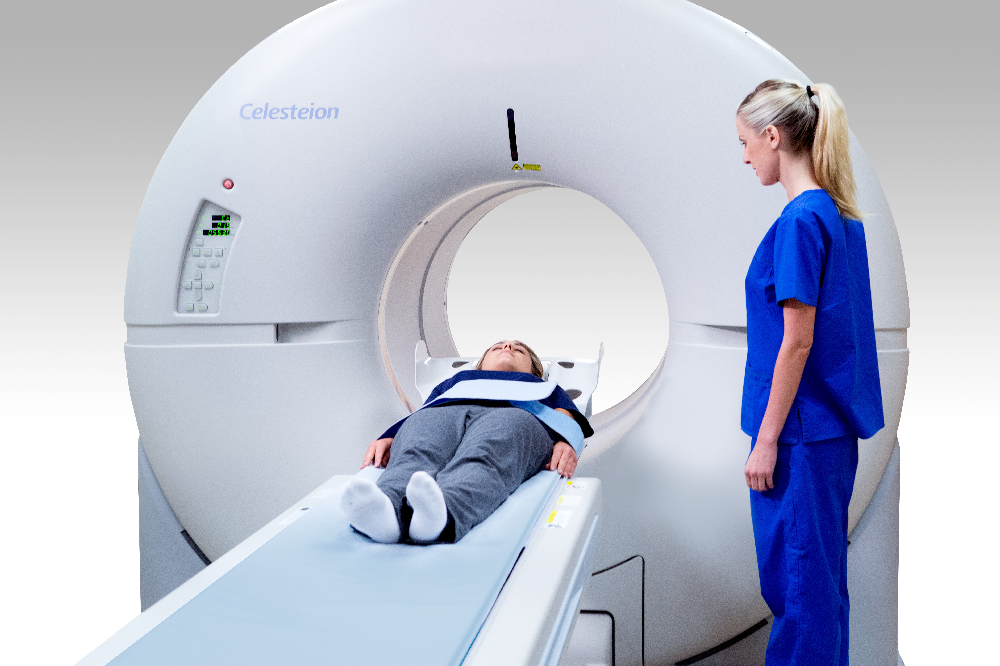
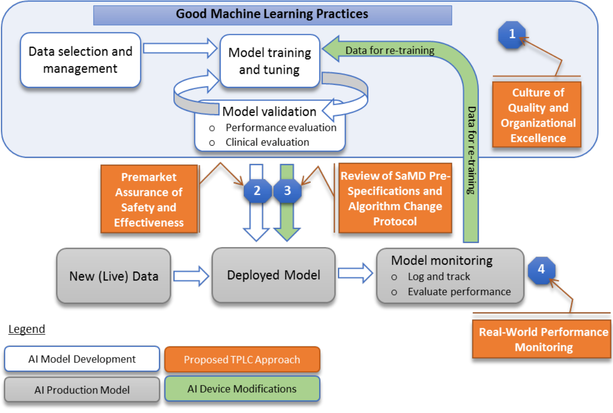

SaMDs lifecycle-based regulatory oversight with e-nov.AI
“Artificial intelligence (AI) and machine learning (ML) technologies have the potential to transform health care by deriving new and
important insights from the vast amount of data generated during the delivery of health care every day. […] FDA’s vision is that, with
appropriately tailored total product lifecycle-based regulatory oversight, AI/ML-based Software as a Medical Device (SaMD)
will deliver safe and effective software functionality that improves the quality of care that patients receive.” [1]
Health Canada, and the United Kingdom’s Medicines and Healthcare products Regulatory Agency (MHRA)
are tagging along with 10 guiding principles that can inform the development of Good Machine Learning Practice (GMLP). [2]
The European Trade Association representing the medical imaging, radiotherapy, health ICT and electromedical industries (COCIR)
recommends updating IEC-62304 by requiring among others that manufacturer define an Algorithm Change Protocol (ACP)
for AI-based devices that change through learning during runtime. [3]
And the European Union is discussing Administrative fines of varying scales (up to €30 million or 6 % of the total worldwide annual
turnover), depending on the severity of the infringement, to sanction non-compliance
with the AI act. [4]
There's a global trade trend to reform the use of ML for Software as Medical Device (SaMD),
with discrepancies between the more pragmatic US and the more coercive EU.
ML appears has both an opportunity to gain market shares and a compliance risk to financial, organizational, and reputational standing.
E-nov.AI can help you to navigate the narrow path from the conception
of your SaMD at its compliance through the management of a proper lifecycle.
[1] Artificial Intelligence/Machine Learning (AI/ML)-Based Software
as a Medical Device (SaMD) Action Plan, 2021, FDA (cache)
[2]
Good Machine Learning Practice for Medical Device Development: Guiding Principles, 2021, FDA, Health Canada, MHRA (cache)
[3]
Artificial intelligence in EU Medical Device Legislation,
2021, COCIR (cache)
[4]
Proposal for a regulation of the European Parliament and of the council laying down harmonised
rules on artificial intelligence (artificial intelligence act) and amending certain Union legislative
acts, 2021, European Parliament (cache)
What is an SaMD product?
According to ISO-13485 (Medical devices — Quality management systems — Requirements
for regulatory purposes), SaMD products are services, software, hardware or processed materials intended to be used,
alone or in combination, for human being, for one or more of the specific purpose(s) of:
- diagnosis, prevention, monitoring, treatment or alleviation of disease;
- diagnosis, monitoring, treatment, alleviation of or compensation for an injury;
- investigation, replacement, modification, or support of the anatomy or of a physiological process;
- supporting or sustaining life;
- control of conception;
- disinfection of medical devices;
- providing information by means of in vitro examination of specimens derived from the human body;
AI being mostly ML, and ML being mostly software possibly used in combination with services, hardware and processed materials,
we’ll speak thereafter of ML-based SaMD software. An example of such software would be the use of deep learning for COVID-19
detection based on CT images.

(source)
Conceiving ML-based SaMD software raises 7 challenges:
- Create a model. A model is a function trained to return a desired output for a given input.
In our COVID example, the model would be more specifically identified as a binary classifier.
This is a highly specialized job for certified TensorFlow developers.
- Create a dataset (only for supervised ML). A dataset is a collection of pairs of desired outputs for given inputs.
Such a dataset is required for supervised ML, as in our COVID example. It can be massive and very expensive to create.
Even if publicly available, it may require extra preparation. In any case, it requires dedicated management by someone with a
deep understanding of the problem intended to be solved with the model to be trained on this dataset.
This is a job for a project manager versed in ML.
- Train the model. In a Big data context, this may require the use of ML Production Pipelines
for continuous improvement. This is essentially regular Software Development Life Cycle management applied to ML-based SaMD software.
This is a job for a product owner versed in ML.
- Serve the model. A model is trained with a focus on speed, accuracy or scalability.
For instance a service at Twitter may focus on scalability in order to serve millions of users using binary
wise operations on embedded vectors. This is another job for a product owner versed in ML.
- Adoption. Depending on the strategy, there may be special concerns for simplicity or transparency which must
be identified from the get-go. This is a job for a product manager.
Compared with a product owner,
a product manager is more focused on the conceptual level and less involved in day-to-day activities.
- Regulation. No compliance means no business. This is another job for a product manager,
but kin to document processes as per the standards, prone to identify the gaps with standards, and able to devise plans to close these gaps.
- Ownership. It may be tempting for companies to rely extensively on third parties with seemingly more skills at a lower cost,
but it's a recipe for disaster. Getting resources on demand from a cloud provider is fine,
having a model which is the foundation of one's business in someone else's care is not.
These many challenges mean that managing an ML-based SaMD software project is quite the task.
Fortunately for you, e-nov.AI has the key human resource you need for it: Pierre-Yves Dumas. With a PhD in AI,
experience in project Management and roots on the business end,
he is the person to set and keep you on track.
What is the lifecycle of ML-based SaMD software?
A software lifecycle includes:
- software development planning;
- software requirements analysis;
- software architectural design;
- software detailed design;
- software unit implementation;
- software unit verification;
- software integration and integration testing;
- software system testing;
- software release;
A lifecycle deals, transversally, with risk management.
The requirements of an SaMD are detailed in the international standard IEC-62304 (Medical device software —
Software lifecycle processes). This standard is harmonized by the European Union and the United States,
and therefore can be used as a benchmark to comply with regulatory requirements from both these markets.
SaMD is mostly dealt with like regular software, meaning with regular practices, like ITIL, and regular tools, like Git.
Quality related requirements are also fairly common, with attention on the quality management system
(c.f. ISO-13485, Medical devices — Quality management systems) and on the risk management (c.f. ISO 14971,
Medical devices — Application of risk management to medical devices).
This is not to undermine the specificities of SaMD and these aspects can already be daunting on their own, but here comes the catch:
When it comes to ML, the requirements of the lifecycle are still being discussed.[5]
This means that to delve in ML-based SaMD software one must accept to participate in an on-going conversation with trends to be aware of.
The FDA lists
the Medical Devices that are Artificial Intelligence and Machine Learning (AI/ML)-Enabled.
There are 343 listed items, for each of them there’s a summary with sections including:
- Device description;
- Indication for use;
- Substantial equivalence;
- Safety;
- Testing;
The testing section may for instance
reads at some point “Bench testing was conducted and it was determined that use of CaLM Reconstruction resulted
in images with improvements to image quality, quantification accuracy, count dependency, and preservation of quantification.”
Of course every bit has to be explained, starting with CaLM that stands for Clear Adaptive Low-noise Method which is used to
deliver improved Positron Emission Tomography (PET) image quality by filtering out noise while maintaining contrast –
offering greater clarity while preserving detail in the image as compared to Local Means Filtering.
Explanations will lead to more explanations, some more established than others (c.f. ISO-5725-1, Accuracy
(trueness and precision) of measurement methods and results), some only understandable by ML experts.

(source)
The point is, there is room to invoke ML in all its specificities as with any regular medical device.
ML may be new as SaMD, but that’s not an issue because dealing with novelty is the bread and butter of the Medical Device industry.
There’s a parallel here to draw with the Defense Industry[6].
ML as SaMD sometimes suffers from bad press being allegedly a blackbox.
It's not. It is a very well defined science.
It's not because not everything is explained in theory that not enough is explained in practice.
The core mechanism of neural networks is the backpropagation. In 1998, in his classic paper named “Efficient BackProp”,
Yann LeCuun would say of it that it “is a very popular neural network learning algorithm because it is conceptually simple,
computationally efficient, and because it often works. However getting it to work well, and sometimes to work at all, can seem more of an
art than a science. Designing and training a network using backprop requires making many seemingly arbitrary choices such as
the number and types of nodes, layers, learning rates, training and test sets, and so forth. These choices can be critical, yet there
is no foolproof recipe for deciding them because they are largely problem and data dependent. However there are heuristics and some
underlying theory that can help guide a practitioner to make better choices.” Every single word of this still holds today.
One may find in this some argument against the use of Machine Learning as a Medical Device because of words like “often”, “art”,
“no foolproof” and “heuristics” but that would only demonstrate a misunderstanding of supervised learning:
the backpropagation is only used during training, not during evaluation, not in production. Evaluation and production solely rely
on forward propagation which is perfectly deterministic.
It takes a real understanding of Machine Learning to know what needs to be proven, when, and how, because its proper use is largely problem and data dependent.
Assurance comes mostly from the modus operandi.
Companies offering ML as SaMD must prove they control what they do,
which is in the end what any quality project is all about. “FDA will assess the culture of quality and organizational excellence
of a particular company and have reasonable assurance of the high quality of their software development, testing,
and performance monitoring of their products. This approach would provide reasonable assurance of safety and
effectiveness throughout the lifecycle of the organization and products so that patients, caregivers, healthcare professionals,
and other users have assurance of the safety and quality of those products.” [5]

FDA's Total Product Lifecycle Regulatory Approach for ML as SaMD (source)
[5]
Proposed Regulatory Framework for Modifications to Artificial Intelligence/Machine Learning (AI/ML)-Based Software
as a Medical Device (SaMD) - Discussion Paper and Request for Feedback FDA
(cache)
[6]
Artificial Intelligence at NATO: dynamic adoption, responsible use NATO
The path to compliance for ML-based SaMD
Culture of Quality and Organizational Excellence (CQOE)
There are 5 Excellence Principles:
- Product Quality (PQ);
- Product Safety (PS);
- Clinical Responsibility (ClinR);
- Cybersecurity Responsibility (CybR);
- Proactive Culture (PC);
There's a list of proposed organizational elements to demonstrate this excellence in the appendix 12 of the Pre-Cert-Working-Model-v1.0.
Elements are aranged in 12 organizational domains. For each element are listed which of the 5 Excellence Principles it is related to.
For instance, an organizational domain is Configuration Management and Change Control, it contains the element ability to rollback software in the event of an emergency
which is related to Product Quality, Product Safety, Cybersecurity Responsibility and Proactive Culture.
The approach advocated by e-nov.AI to handle these elements is to list for each the procedures they are related to.
These procedures may be existing or have to be implemented. These procedures should explictly reference the principles they are related to
and what they do about it. For instance the ability to rollback software in the event of an emergency presumes the existence of
no less than five procedures, one to detect the emergencies, one to decide and order a rollback, one to effectively rollback,
also one to prepare for rollback during deployment, and finally one to check the capacity to rollback.
Think Preparation, Detection, Decision, Action, Verification.
Procedures may be automitized, fully or in part, so UML Sequence Diagrams are a good way to model them.
Pipelines are examples of automatized procedures and must be documented as such, with references to the principles they are related to.
Links both ways between README files in Git and the QMS documentation are essential.
Ideally, during the audit, you want the auditor to browse through a list of the organizational elements, pick a few,
follow the links to the procedures that implement them, and for each automatization have the version history with the requirements,
the tests proving the requirements are met, and the logs that prove their deployments. It's a lot of work.
Most of these organizational elements are not specific to ML as SaMD and benefit from established tools like Jenkins.
This is also why many of these elements will appear in other standards, hence one should establish a list of correspondances,
similar for instance to Table B.1 between ISO-13485:2016 and ISO-9001:2015 in ISO-13485:2016.
Data selection and management
Getting more specific to ML, data selection and management will be better informed by the Guiding Principles of the
Good Machine Learning Practice for Medical Device Development.
Principle 2 mentions as fundamentals data quality assurance and data management with the need to ensure data authenticity and integrity.
Principle 3 says that for clinical studies, "participants and Data Sets [must be] representative of the intended patient population: data
collection protocols should ensure that the relevant characteristics of the intended patient population (for example, in terms of age,
gender, sex, race, and ethnicity), use, and measurement inputs are sufficiently represented in a sample of adequate size in the clinical
study and training and test datasets, so that results can be reasonably generalized to the population of interest. This is important to
manage any bias, promote appropriate and generalizable performance across the intended patient population, assess usability, and
identify circumstances where the model may underperform."
Principle 4 says that "training data sets are independent of test sets: training and test datasets are selected and maintained to be
appropriately independent of one another. All potential sources of dependence, including patient, data acquisition, and site factors,
are considered and addressed to assure independence." I.e. tf.split or similar,
that's super basic.
E-nov.AI recommand to consider these principles as requirements and to add them to the list of the
organizational elements to demonstrate excellence. Datasets should come with a README file explicitly referencing these principles
and explaining what was done to ensure compliance.
For instance, Principle 4 about having training data sets independent of test sets is rather easy to achieve with something like
tf.split, but having the means to prove that it's indeed used and properly used
is what makes a difference between a compliant SaMD and something that is not a compliant SaMD.
The most difficult challenge when managing an ML-based SaMD project may actually be to push the developers to go the extra-mile and produce code
that don't just work but is indeed compliant because enough effort has gone into mapping it with regulatory requirements.
Unfortunately developers are not trained to deal with regulatory requirements and focus too often in producing code quickly.
The adoption of Agile methods is not helping there and leads too often the documentation to be rushed at the end of sprints,
when it's not the tests.
One job of the project manager
is too slow down the expectations regarding what every sprint can achieve (quantity) to favor the compliance of what sprints can achieve (quality).
Developing aiming at compliance takes a lot more time than developing for a proof of concept. Mistaking the two is to take the risk of spending
years of funding on code that won't get the green light to hit the market.
The case of transfer-learning
Other items from the FDA's Total Product Lifecycle Regulatory Approach for ML as SaMD can be dealt with like the two detailed above with the Excellence Principles or
the Guiding Principles of the Good Machine Learning Practice for Medical Device Development. However a somehow special case is the use of transfer learning. S
poiler ahead, it is not an issue but it may be worth explaining why.
Transfer learning is often described as building on top of a third-party models.
It can sound reminiscent of using third-party libraries and thus may be inadequately expected to come with similar proofs of compliance. This is a classic misunderstanding.
Transfer learning is just a way to define a model, and models are safe, so using transfer learning is safe.
First of all, most software issues, for instance potential security breaches, usually arise from the use of functions with side-effects.
For instance, accessing the internet, reading a file, printing a document or displaying some text are all side-effects. They are literally effects happening outside the functions that trigger them.
On the other hand, a multiplication is a purely mathematical function with no side-effect, there are two inputs and one output, but no side-effect.
A pure combination of purely mathematical functions is also a purely mathematical function, and a model, in the context of machine learning, is such a function.
In order to be trained, a model has to be a function for which one can compute the gradient.
A multiplication, a dot-product or a convolutionare all purely mathematical functions for which one can compute the gradient.
Accessing the internet is not a function for which one can compute the gradient. That means that in essence, models are safe.
Lambda layers may nuance this statement but they are easily identified and can be as easily ruled out.
Mathematical functions may yet throw exceptions, which if not handled properly can cause the software to crash.
Attempting to devise by zero would for instance throw an exception.
Models, however tend to use very few high level operations called layers for which these issues can’t happen by design. M
odel can include millions of parameters and hyper-parameters, changing through thousands of iterations, so the chance of having one at zero at some point is high.
For instance biases are initiated at zero. If established layers would crash because of that, it would be known.
One may want, very rarely, to introduce a new type of layer and that would indeed require extensive testing, but models used for transfer learning don’t,
that’s why they can run out of the box with say the good version of TensorFlow.
One may wonder what’s specific about the models used for transfer learning and if there isn’t anything fishy about them making their way in an SaMD.
These models are competition winners trained on public datasets, their implementations is known and their motivations are discussed in the scientific literature.
They are extremely well documented. Only a few of the very best models are used for transfer learning, because the whole point is to literally transfer learning,
so it has to be done from the very best models. A custom head can re-purpose them for different types of problems,
for instance from classification to detection, and a new dataset can specialize them for new data. Because they’re trained on huge generic datasets,
they are solid universal bases like few models can be. Because there are so few of them, it’s easy to source them.
So easy actually that most are included in TensorFlow, like VGG16 and
ResNet, which means that if TensorFlow is regulartory compliant, they should be as well.
So really there’s nothing special about transfer learning and it doesn’t introduce any new compliance challenge. In any case, looking at the FDA's Total Product Lifecycle Regulatory Approach for ML as SaMD,
what matters is not how the model is defined (so with or without transfer learning), but its validation after training on selected data.
Transfer learning is simply not an issue.
Conclusion
With e-nov.AI you can definitely get your ML-enabled SaMD all the way from
the ideation to the certification.
Artificial Intelligence
Machine Learning Enabled Devices and Services
Contact me through